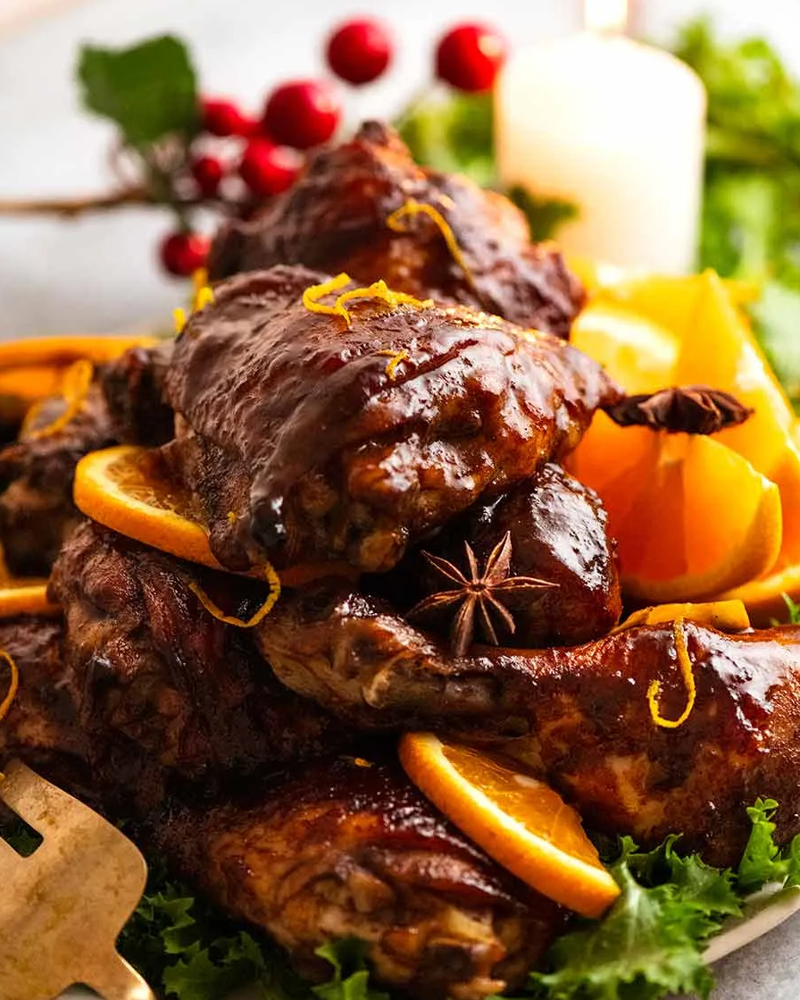

Sticky Glazed Christmas Chicken

Description
The warm, traditional Christmas spice flavours and brown sugar marinade makes this glazed Christmas Chicken extra moist and flavourful, as well as making it ultra sticky.
Easier and cheaper than ham, with a much higher ratio of glaze to meat, this is so good I’ve actually had people tell me they love this chicken more than Christmas ham!!
Ingredients
- Chicken for the protein
- Oranges
- Spices
- Brown Sugar
Steps
- Make marinade Mix the marinade together in a jug or bowl. Don’t shortcut it in the ziplock bag; you really need a whisk to dissolve everything properly (as I learnt!);
- Marinate chicken Pour marinade over the chicken in a ziplock bag. Yes, I acknowledge ziplock bags aren’t environmentally friendly and I really try to minimise their use, eg. wash and re-use when I can. But for marinades, they are undisputedly the best way to get the flavour fully infused all around and through the chicken (with less marinade wastage). If you’re really averse to the use of ziplock bags, then scale the marinade up by 50% and use a non reactive bowl or container, and toss the chicken a couple of times while marinating;
- Marinate 24 hours for best results. Up to 48 hours is fine, bare minimum is 3 hours. The glaze is so fabulous, it’s still ok even if it hasn’t had time to fully penetrate all through the flesh;